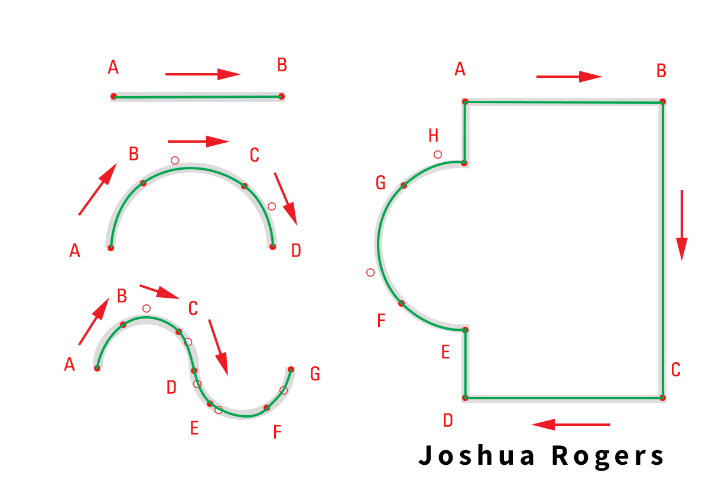
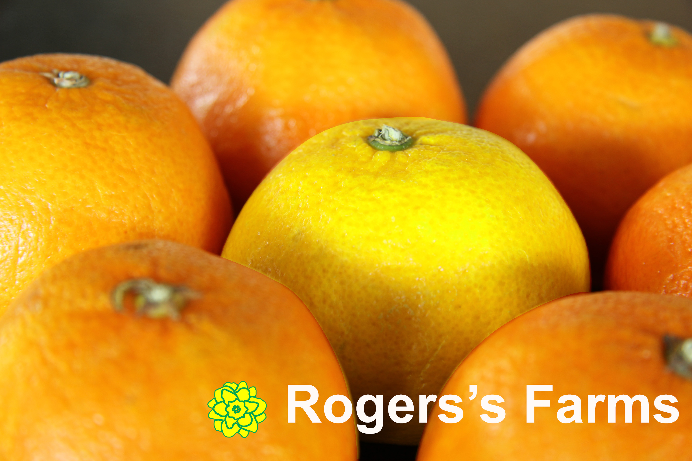

Joshua Rogers's Photoshop Experience
Vector Drawing
This lesson focused on using vector drawing techniques to create shapes that can be used as logos within an image.
For this assignment, we created two images. The top image was used for practicing vector drawing techniques, while the bottom image applied those same skills to design a simple logo.
During the practice portion, we used the Pen tool to draw various shapes. We first changed the stroke color to green so the lines we created would be easier to see. To draw straight lines, we simply clicked from point to point. For curved lines, we clicked and held the mouse, then dragged to adjust the curve using the direction handles. This allowed us to control how the line bent between anchor points. Once the shapes were complete, we added our name to the design on a background.
For the logo image, we used the same Pen tool and vector techniques, but in a more advanced way. We incorporated layers and created a custom shape that could function as a logo within the overall composition.

